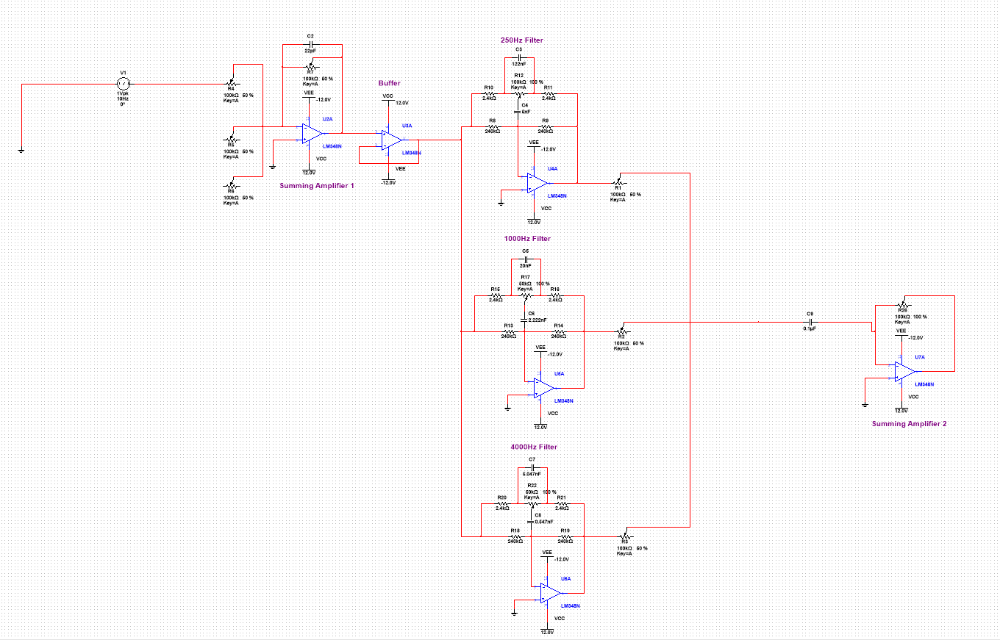

Audio Mixer & Equalizer
EE 233: Circuit Theory, University of Washington
In my circuit theory course, my lab group and I built a three-channel audio mixing console with a tunable equalizer. The system takes an audio signal through an input summing amplifier and buffer, splits it into three parallel second-order band-pass filters centered near 250Hz, 1kHz, and 4kHz, then recombines them through an output summing amplifier — with a potentiometer on each channel that sets that band's gain and lets the same filter topology act as either a band-pass or a band-reject filter. The design started in the prelab, where we derived the filter's transfer function from a generic-impedance topology, applied a Y-Δ transformation to make the equalizer network tractable to analyze, and chose resistor and capacitor values to place each filter at its target center frequency. While we worked through the build together, I was primarily responsible for the MATLAB and Multisim side of the project, running AC analysis on each filter stage and on the complete system and producing the simulated frequency response plots we designed toward and checked our measurements against. We then built the circuit on breadboards with ±12V supplies and characterized it on the bench, sweeping from 10Hz to 5kHz with a function generator and spectrum analyzer to measure each filter's center frequency, 3dB points, and gain across potentiometer settings. The hardest part was integration: once every stage was wired together, unexpected voltage readings meant tracing signals back through the schematic stage by stage to find where the physical build had diverged from the design. We ended up with a working mixer that we could connect to a computer's audio output and hear the equalizer shape real music in real time. The project gave me hands-on experience carrying an analog design from a hand-derived transfer function through simulation to a working physical system, and a much better sense of how far bench behavior can drift from the simulator.
Multisim Schematic

The full system simulated in Multisim — input summing amplifier and buffer, the three parallel filter stages, and the output summing amplifier. Click to view full size.